|
Top Oss - AGOVV (2-0) 25 maart 2005 |
Top Oss
- AGOVV (2-0) 25 maart 2005
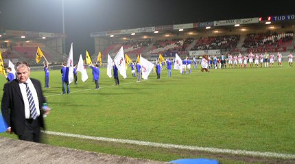
Voor de derde keer dit seizoen reisden we af naar het stadion van Top Oss.
Deze keer niet voor een oefenwedstrijd van Roda JC, niet voor een
Amstelcup-wedstrijd in de sneeuw, maar voor een lente-avondduel
tegen AGOVV.
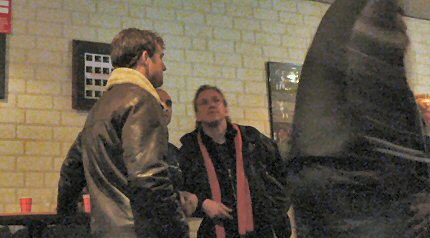
Herinnert u zich deze nog? Het is de o.a. ex-Fortuna-speler
Robert Roest.
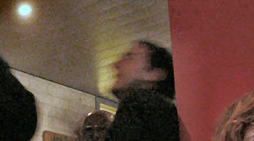
Zejlko Petrovic, ex-RKC, tegenwoordig assistent-trainer bij
Feyenoord, was
ook aanwezig. Hij toonde zich niet camera-vriendelijk.
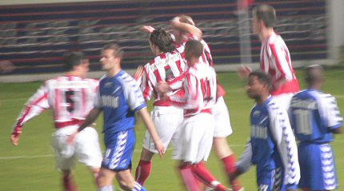
Hier zien we de viering van een snelle 1-0 voorsprong door Leon
van Dalen
die al na 5 minuten 1-0 scoort.
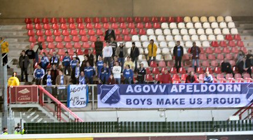
De nauwelijks 30 supporters uit Apeldoorn.
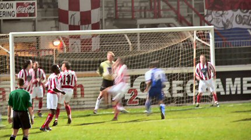
Doelman Wilko de Vogt verrichtte knappe reddingen. Deze opvolger
van
Guido Budziak die van RKC werd gehuurd zal de club verlaten maar zijn
opvolger Sjors de Bruin, tekende vanavond voor het oog van het tv-circuit
een tweejarig contract bij Top Oss.
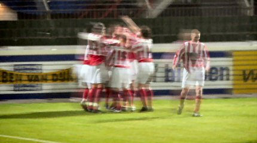
In de 57e min. scoort Marinus Dijkhuizen 2-0.
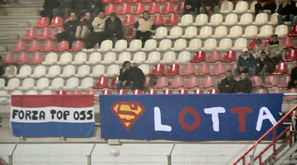
Deze is voor Marcel vd Sloot alias Slotta, alias Sloet.
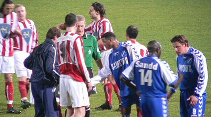
Scheidsrechter Van der Roest deelde vier gele kaarten uit, voor
beide
teams twee.
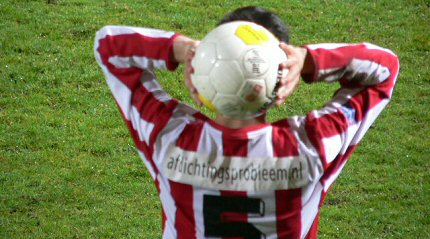
Een van de kaartenvangers, David Ririhena, gooit in. De wedstrijd
is bijna
afgelopen en Top Oss wint voor de derde keer op rij.
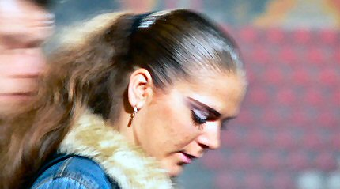
Deze Ozzie-girl wacht de drie minuten extra speeltijd niet af.
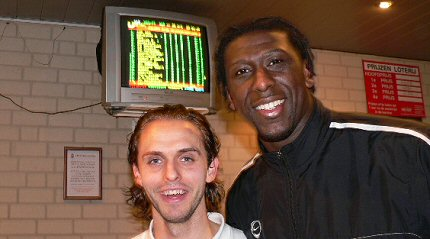
De nog steeds geblesseerde Regillio Vrede met Dirk Schoofs, de
maker
van de beslissende penalty tegen RKC in de 1/8 finale Amstelcup.
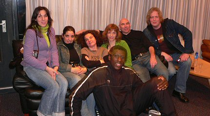
Afscheidsfoto: Daniëlle, Ineke, Danniëlle, Loes, Bert, Marco en
op de
voorgrond Regillio.
Top Oss zal geen kampioen worden
maar staat momenteel nummer een in
de vierde periode. Naar verwachting zal Regillio over twee weken tegen
Heracles weer speelklaar zijn. Misschien tot ziens....